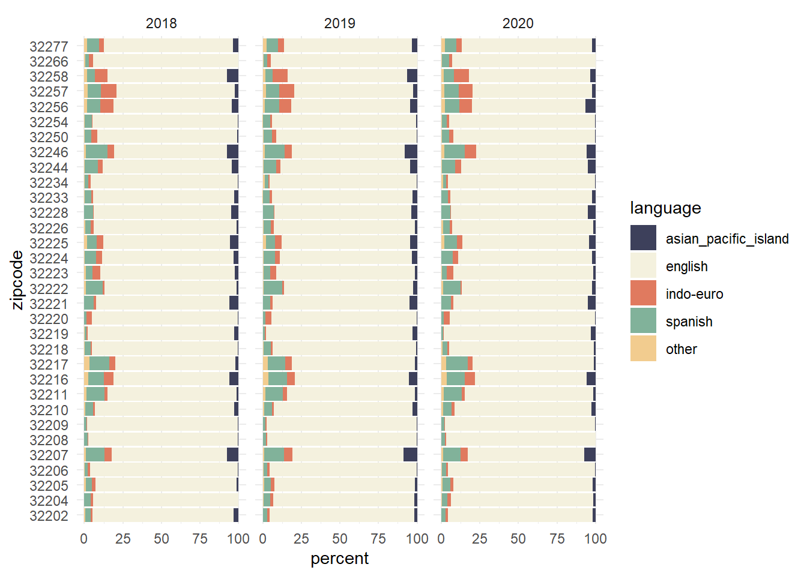

library(tidyverse)
library(openxlsx)
library(janitor)
library(scales)AHRQ’s database on Social Determinants of Health (SDOH)
Load Packages
Load Data
# load zip code info
zip_data <-
read_csv("data/Death_Count_020820232142.csv", skip = 4)
# make a vector of zip codes
duval_zipcodes <-
zip_data %>%
filter(MeasuresLevel == "Total") %>%
distinct(ZIPCODE) %>% pull()
# drop last two strings of the list
duval_zipcodes <- duval_zipcodes[-c(33:34)]
# load sdoh files for 2018 - 2020
sdoh <- map_df(.x = c("https://www.ahrq.gov/sites/default/files/wysiwyg/sdoh/SDOH_2018_ZIPCODE_1_0.xlsx",
"https://www.ahrq.gov/sites/default/files/wysiwyg/sdoh/SDOH_2019_ZIPCODE_1_0.xlsx",
"https://www.ahrq.gov/sites/default/files/wysiwyg/sdoh/SDOH_2020_ZIPCODE_1_0.xlsx"),
.f = ~read.xlsx(.x, sheet = 2))Data obtained from:
Social Determinants of Health Database | Agency for Healthcare Research and Quality (ahrq.gov)
Wrangle Data: Duval County
# clean column names (snake_case)
sdoh_cln <- sdoh %>% clean_names()
# filter State: Florida and County: Duval County
sdoh_cln <-
sdoh_cln %>%
filter(zipcode %in% duval_zipcodes)
# Look at the first 6 rows
# head(sdoh_cln)
# Percentage of the population by zip code that speaks: English, Spanish or Asian and Pacific Island languages
# select columns of interest
acs_language <-
sdoh_cln %>%
select(year, zipcode, acs_pct_english_zc, acs_pct_spanish_zc, acs_pct_api_lang_zc, acs_pct_oth_eurp_zc, acs_pct_oth_lang_zc)
# rename columns
acs_language <-
acs_language %>%
rename(
"english" = acs_pct_english_zc,
"spanish" = acs_pct_spanish_zc,
"asian_pacific_island" = acs_pct_api_lang_zc,
"indo-euro" = acs_pct_oth_eurp_zc,
"other" = acs_pct_oth_lang_zc
)
# pivot data to tidy (long) format
acs_language <-
acs_language %>%
pivot_longer(!c(year, zipcode), names_to = "language", values_to = "percent")
# make year zipcode and language factors
acs_language <-
acs_language %>%
mutate(year = factor(year),
language = factor(language, levels = c("asian_pacific_island", "english", "indo-euro", "spanish", "other")),
zipcode = factor(zipcode))Plot 1: Languages spoken by a percentage of the population by zip code for 2018 - 2020
# Plot
acs_language %>%
ggplot(aes(x = zipcode, y = percent, fill = language)) +
geom_col() +
# geom_text(aes(label = percent), position = position_stack(vjust = 0.5), color = "red") +
coord_flip() +
facet_wrap(~year) +
theme_minimal() +
scale_fill_manual(values=c("#3D405B", "#F4F1DE", "#E07A5F", "#81B29A", "#F2CC8F"))